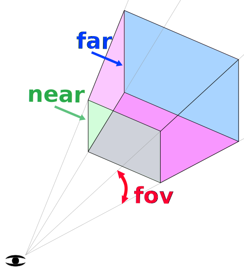
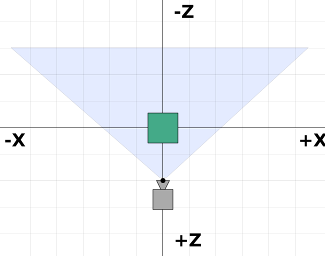

principes de base
Ceci est le premier article d'une série consacrée à Three.js. Three.js est une bibliothèque 3D qui a pour objectif de rendre aussi facile que possible l'inclusion de contenu 3D dans une page web.
Three.js est souvent confondu avec WebGL puisque la plupart du temps, mais pas toujours, elle exploite WebGL pour dessiner en 3D. WebGL est un système très bas niveau qui ne dessine que des points, des lignes et des triangles. Faire quelque chose d'exploitable avec WebGL requiert une certaine quantité de code et c'est là que Three.js intervient. Elle prend en charge des choses telles que les scènes, lumières, ombres, matériaux, textures, mathématiques 3D, en bref, tout ce que vous avez à écrire par vous même si vous aviez à utiliser WebGL directement.
Ces tutoriels supposent que JavaScript vous est connu et, pour grande partie, se conforment au style ES6. Consultez ici une brève liste des choses que vous êtes déjà censés connaître.
La plupart des navigateurs qui supportent three.js se mettent à jour automatiquement donc la plupart des utilisateurs devraient être capables d'exécuter ce code. Si vous souhaitez exécuter ce code sur un très vieux navigateur, nous vous recommandons un transpileur tel que Babel. Bien sûr, les utilisateurs exécutant de très vieux navigateurs ont probablement des machines incapables de faire tourner Three.js.
Lors de l'apprentissage de la plupart des langages de programmation,
la première tâche que les gens font est de faire afficher à l'ordinateur
"Hello World!". Pour la programmation 3D, l'équivalent est de faire afficher
un cube en 3D. Donc, nous commencerons par "Hello Cube!".
Avant de débuter, nous allons tenter de vous donner un idée de la structure d'une application Three.js. Elle requiert de créer un ensemble d'objets et de les connecter. Voici un diagramme qui représente une application Three.js de petite taille:
Voici ce qui est à remarquer dans le diagramme ci-dessus :
Il y a un
Renderer. C'est sans doute l'objet principal de Three.js. Vous passez uneSceneet uneCameraà unRendereret il effectue le rendu (dessine) de la partie de la scène 3D qui est à l'intérieur de l'espace visible (en réalité une pyramide tronquée ou frustum) de la caméra dans une image 2D affichée dans un canevas (canvas).Il y a un graphe de scène qui est une structure arborescente, constituée de divers objets tel qu'un objet
Scene, de multiple maillages (Mesh), des lumières (Light), des groupes (Group), des objets 3DObject3Det des objetsCamera. Un objetScenedéfinit la racine d'un graphe de scène et contient des propriétés telles que la couleur d'arrière plan et le brouillard. L'ensemble de ces objets définissent une structure hiérarchique de type parent/enfant, arborescente, et indique où les objets apparaissent et comment ils sont orientés. Les enfants sont positionnés et orientés par rapport à leur parent. Par exemple, les roues d'une voiture sont les enfants du châssis impliquant que si l'on déplace ou oriente la voiture, les roues suivront automatiquement son déplacement. Plus de détails sont donnés dans l'article sur les graphes de scène.Il est à noter sur que ce diagramme
Cameraest patiellement placé dans le graphe de scène. Cela permet d'attirer l'attention qu'en Three.js, contrairement aux autres objets, uneCamerane doit pas forcément faire partie du graphe de scène pour être opérationnelle. UneCamera, de la même façon que les autres objets, enfant d'un autre objet, se déplace et s'oriente par rapport à son objet parent. A la fin de l'article sur les graphes de scène, l'inclusion de multiples objetsCameradans un unique graphe de scène est donné en exemple.Les objets de type
Meshreprésentent une géométrie (Geometry) liée à un matériau (Material) spécifique. Les objetsMaterialetGeometrypeuvent être liés à plusieurs objetsMeshsimultanément. Par exemple, pour dessiner deux cubes bleus à des positions différentes, nous pouvons soit utiliser deux objetsMeshpour spécifier les positions et orientations de chaque cube; soit nous pouvons utiliser seulement une géométrie unique (Geometry) pour décrire les données spatiales du cube et un matériau unique (Material) pour spécifier la couleur bleue. Les deux objetsMeshpeuvent ainsi référencer les mêmes objetsGeometryetMaterial.Les objets
Geometryreprésentent les données associées aux sommets d'une géométrie telle qu'une sphère, un cube, un avion, un chien, un chat, un humain, un arbre, un bâtiment, etc... Three.js fournit plusieurs types intégrés de primitives géométriques. Vous pouvez aussi créer vos propres géométries ou charger des géométries à partir d'un fichier.Les objets
Materialreprésentent les propriétés de surface utilisées pour dessiner la géométrie telles que la couleur à utiliser ou le pouvoir réfléchissant (brillance). Un matériau (Material) peut aussi se référer à un ou plusieurs objetsTexturedont l'utilité est, par exemple, de plaquer une image sur la surface d'une géométrie.Les objets
Texturereprésentent généralement des images soit chargées de fichiers image, soit générées par le biais d'un canevas ou résultant du rendu d'une autre scène.Les objets
Lightreprésentent différentes sortent de lumière.
Maintenant que tout cela a été défini, nous allons présenter un exemple de type "Hello Cube" utilisant un nombre minimum d'élements Three.js :
Tout d'abord, chargeons Three.js :
<script type="module"> import * as THREE from './resources/threejs/r130/build/three.module.js'; </script>
Il est important d'écrire type="module" dans la balise script.
Cela nous autorise l'utilisation du mot-clé import pour charger Three.js.
Il y a d'autres manières de le réaliser, mais depuis la version 106 (r106),
l'utilisation des modules est recommandée. Ils ont l'avantage de pouvoir
facilement importer les autres modules dont ils ont besoin. Cela nous
épargne d'avoir à charger à la main les scripts supplémentaires dont ils dépendent.
Ensuite, nous avons besoin d'une balise <canvas> :
<body> <canvas id="c"></canvas> </body>
Nous allons demander à Three.js de dessiner dans ce canevas donc nous devons le rechercher dans le document html :
<script type="module">
import * as THREE from '../../build/three.module.js';
+function main() {
+ const canvas = document.querySelector('#c');
+ const renderer = new THREE.WebGLRenderer({canvas});
+ ...
</script>
Après la recherche du canevas, nous créons un WebGLRenderer. Le renderer
a pour mission de charger les données fournies et d'en effectuer le rendu
dans le canevas. Par le passé, il y a eu aussi d'autre renderers tels que
CSSRenderer ou CanvasRenderer et, dans le futur, il pourrait y avoir un
WebGL2Renderer ou WebGPURenderer. Pour le moment, il y a un WebGLRenderer
qui utiliser WebGL pour effectuer une rendu 3D dans le canevas.
Notez qu'il y a quelques détails ésotériques ici. Si vous ne passez pas un canevas à Three.js, il va en créer un pour vous mais vous aurez à l'ajouter au document. Où l'ajouter peut dépendre du contexte d'utilisation et vous aurez à modifier votre code en conséquence. Passer un canevas à Three.js nous apparaît donc plus flexible. Nous pouvons mettre le canevas n'importe où et le code le retrouvera. Dans le cas contraire, nous aurons à coder où insérer le canevas, ce qui amènera probablement à changer le code si le contexte d'utilisation change.
Ensuite, nous avons besoin d'une caméra. Nous créons une PerspectiveCamera.
const fov = 75; const aspect = 2; // valeur par défaut du canevas const near = 0.1; const far = 5; const camera = new THREE.PerspectiveCamera(fov, aspect, near, far);
fov est le raccourci pour field of view ou champ de vision.
Dans ce cas, 75 degrés d'ouverture verticale. Il est à noter que
la plupart des angles dans Three.js sont exprimés en radians à l'exception
de la caméra perspective.
aspect est l'aspect de l'affichage dans le canevas. Cela sera détaillé
dans un autre article. Toutefois, par défaut,
un canevas est de taille 300x150 pixels ce qui lui confère l'aspect 300/150 ou 2.
near et far délimitent la portion de l'espace devant la caméra dont
le rendu est effectué. Tout ce qui est avant ou après est découpé (clipped),
donc non dessiné.
Ces 4 paramètres définissent une pyramide tronquée ou "frustum". En d'autres termes, il s'agit d'une autre forme 3D à l'instar des sphères, cubes et prismes.

L'espacement entre les plans near et far est déterminé par le champ de vision. La largeur est fixée par le champ de vision et l'aspect.
Tout ce qui est dans le frustum est dessiné. Ce qui est à l'extérieur ne l'est pas.
La caméra regarde par défaut suivant l'axe -Z, +Y pointant le haut. Nous mettons notre cube à l'origine donc nous devons déplacer la caméra de l'origine légèrement vers son arrière pour voir quelque chose.
camera.position.z = 2;
Voici ce que nous voudrions voir :

Dans le schéma ci-dessus, nous pouvons voir que notre caméra est placée
en z = 2. Elle regarde le long de la direction -Z.
Notre frustum démarre à 0.1 unités de la caméra et s'étend jusqu'à 5 unités devant elle.
Comme le schéma est vu du haut, le champ de vue est affecté par l'aspect.
Notre canvas est deux fois plus large que haut donc le champ de vue horizontal
est plus grand que les 75 degrés spécifié pour le champ vertical.
Ensuite, nous créons une Scene. Dans Three.js, une Scene est la racine
du graphe de scène. Tout ce que nous voulons que Three.js dessine doit être ajouté
à la scène. Cela sera davantage détaillé dans un futur article sur le fonctionnement des scènes.
const scene = new THREE.Scene();
Ensuite nous créons une géométrie de type BoxGeometry qui contient les données pour un parallélépipède.
Quasiment tout ce que nous souhaitons afficher avec Three.js nécessite une
géométrie qui définit les sommets qui composent nos objets 3D.
const boxWidth = 1; const boxHeight = 1; const boxDepth = 1; const geometry = new THREE.BoxGeometry(boxWidth, boxHeight, boxDepth);
Puis nous créons un matériau basique et fixons sa couleur, qui peut être spécifiée au format hexadécimal (6 chiffres) du standard CSS.
const material = new THREE.MeshBasicMaterial({color: 0x44aa88});
Nous créons ensuite un maillage (Mesh). Dans Three.js, il représente la combinaison
d'une Geometry (forme de l'objet) et d'un matériau (Material - aspect
d'un objet, brillant ou plat, quelle couleur, quelle texture appliquer, etc.)
ainsi que la position, l'orientation et l'échelle de l'objet dans la scène.
const cube = new THREE.Mesh(geometry, material);
Finalement, nous ajoutons le maillage à la scène.
scene.add(cube);
Nous pouvons, maintenant, effectuer le rendu de la scène en appelant la fonction render du renderer et en lui passant la scène et la caméra.
renderer.render(scene, camera);
Voici un exemple fonctionnel :
Il est difficile de déterminer s'il s'agit d'un cube 3D puisque nous l'observons suivant l'axe -Z sur lequel le cube est lui même aligné. Nous n'en voyons donc qu'une face.
Animons notre cube en le faisant tourner et cela fera clairement
apparaître qu'il est dessiné en 3D. Pour l'animation, nous effectuerons son rendu
dans une boucle de rendu en utilisant
requestAnimationFrame.
Voici notre boucle :
function render(time) {
time *= 0.001; // convertis le temps en secondes
cube.rotation.x = time;
cube.rotation.y = time;
renderer.render(scene, camera);
requestAnimationFrame(render);
}
requestAnimationFrame(render);
requestAnimationFrame est une requête auprès du navigateur dans le cas où vous
voulez animer quelque chose. Nous lui passons une fonction à appeler.
Dans notre cas, c'est la fonction render. Le navigateur appellera cette fonction
et, si nous mettons à jour l'affichage de la page, le navigateur refera le rendu
de la page. Dans notre cas, nous appelons la fonction renderer.render de Three.js
qui dessinera notre scène.
requestAnimationFrame passe à notre fonction le temps depuis lequel la page est chargée.
Il est mesuré en millisecondes. Il est parfois plus facile de travailler
avec des secondes. C'est pourquoi, nous l'avons converti.
A présent, nous appliquons sur le cube des rotations le long des axes X et Y en fonction du temps écoulé. Les angles de rotation sont exprimés en radians. Sachant que 2 PI radians fait faire un tour complet, notre cube effectuera une rotation complète sur chaque axe en, à peu près, 6,28 secondes.
Nous effectuons alors le rendu de la scène et demandons une autre image pour l'animation afin de poursuivre notre boucle.
A l'extérieur de la boucle, nous appelons requestAnimationFrame une première fois pour activer la boucle.
C'est un peu mieux mais il est toujours difficile de percevoir la 3D. Ce qui aiderait serait d'ajouter de la lumière. Three.js propose plusieurs type de lumière que nous détaillerons dans un futur article. Pour le moment, créons une lumière directionnelle.
{
const color = 0xFFFFFF;
const intensity = 1;
const light = new THREE.DirectionalLight(color, intensity);
light.position.set(-1, 2, 4);
scene.add(light);
}
Les lumières directionnelles ont une position et une cible. Les deux sont par défaut en 0, 0, 0. Dans notre cas, nous positionnons la lumière en -1, 2, 4, de manière à ce qu'elle soit légèrement sur la gauche, au dessus et derrière notre caméra. La cible est toujours 0, 0, 0 donc elle va éclairer vers l'origine.
Nous avons également besoin de changer le matériau car MeshBasicMaterial ne s'applique pas aux
lumières. Nous le remplaçons par un MeshPhongMaterial qui est affecté par les sources lumineuses.
-const material = new THREE.MeshBasicMaterial({color: 0x44aa88}); // cyan
+const material = new THREE.MeshPhongMaterial({color: 0x44aa88}); // cyan
Voici à présent la nouvelle structure de notre programme :
Et voici son fonctionnement :
Cela devrait à présent apparaître très clairement en 3D.
Pour le sport, ajoutons 2 cubes supplémentaires.
Nous partageons la même géométrie pour chaque cube mais un matériau différent par cube afin qu'ils aient une couleur différente.
Tout d'abord, nous définissons une fonction qui crée un nouveau matériau avec la couleur spécifiée. Ensuite, elle créé un maillage à partir de la géométrie spécifiée, l'ajoute à la scène et change sa position en X.
function makeInstance(geometry, color, x) {
const material = new THREE.MeshPhongMaterial({color});
const cube = new THREE.Mesh(geometry, material);
scene.add(cube);
cube.position.x = x;
return cube;
}
Ensuite, nous l'appellons à 3 reprises avec 3 différentes couleurs
et positions en X, puis nous conservons ces instances de Mesh dans un tableau.
const cubes = [ makeInstance(geometry, 0x44aa88, 0), makeInstance(geometry, 0x8844aa, -2), makeInstance(geometry, 0xaa8844, 2), ];
Enfin, nous faisons tourner ces 3 cubes dans notre fonction de rendu. Nous calculons une rotation légèrement différente pour chacun d'eux.
function render(time) {
time *= 0.001; // conversion du temps en secondes
cubes.forEach((cube, ndx) => {
const speed = 1 + ndx * .1;
const rot = time * speed;
cube.rotation.x = rot;
cube.rotation.y = rot;
});
...
et voilà le résultat.
Si nous le comparons au schéma précédent, nous constatons qu'il est conforme à nos attentes. Les cubes en X = -2 et X = +2 sont partiellement en dehors du frustum. Ils sont, de plus, exagérément déformés puisque le champ de vision dépeint au travers du canevas est extrême.
A présent, notre programme est schématisé par la figure suivante :

Comme nous pouvons le constater, nous avons 3 objets de type Mesh, chacun référençant
la même BoxGeometry. Chaque Mesh référence également un MeshPhongMaterial unique
de sorte que chaque cube possède une couleur différente.
Nous espérons que cette courte introduction vous aide à débuter. La prochaine étape consiste à rendre notre code réactif et donc adaptable à de multiples situations.